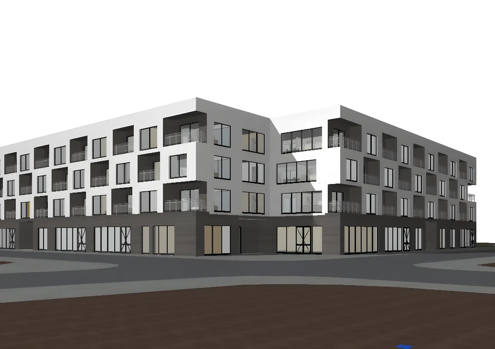
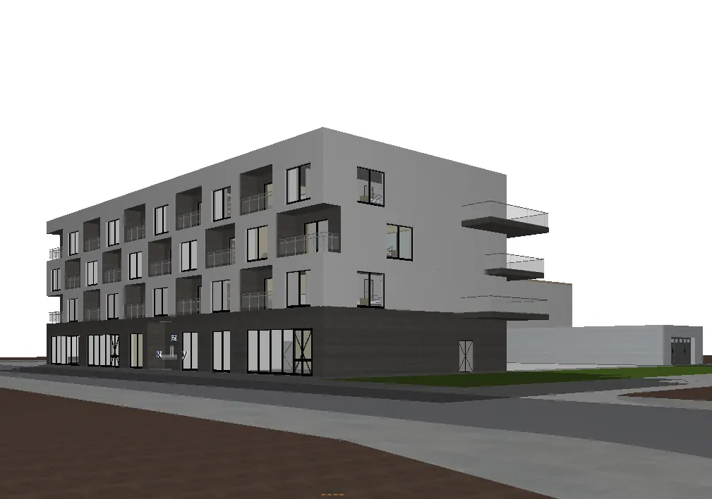
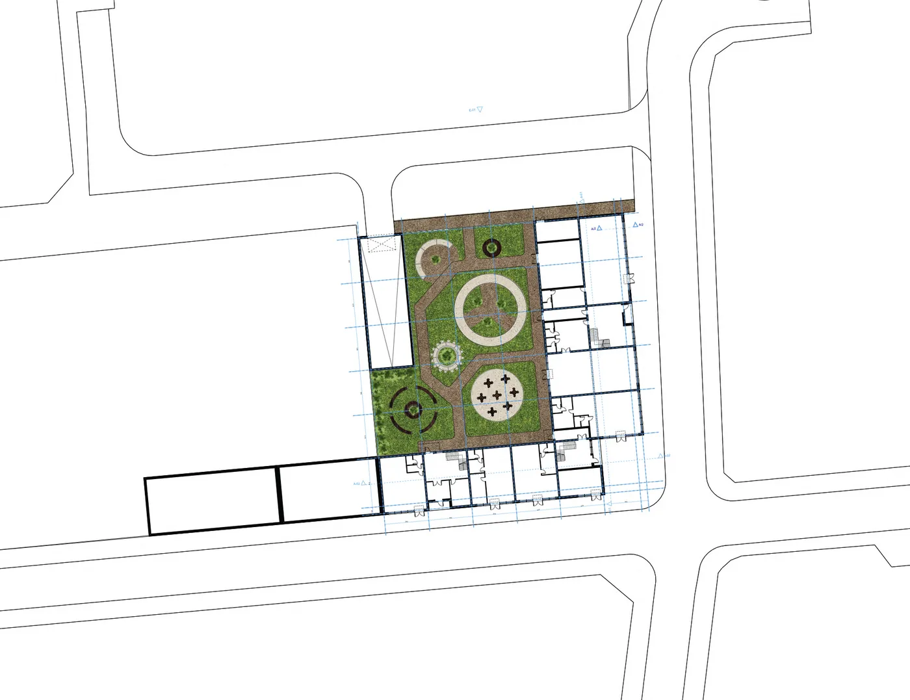

07/ 15
Mieszkalnictwo · Zabudowa uzupełniająca · 2024
Budynek wielorodzinny z usługą w parterze
Budynek mieszkalny w zabudowie uzupełniającej, z lokalem usługowym otwartym na ulicę.

Budynek mieszkalny wielorodzinny wpisany w istniejącą tkankę miejską, z lokalem usługowym w parterze. Projekt obejmuje rzuty, przekroje, elewacje z detalem oraz zagospodarowanie terenu.



—
Plansze
Plansze projektowe w pełnej rozdzielczości — kliknij, aby powiększyć.